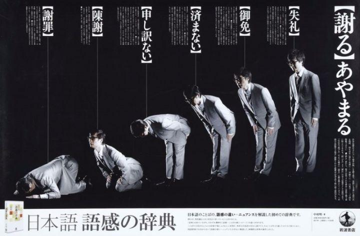

刚爬起来酒劲还在头昏脑胀，上网乱转发现国际一流和谐宜居之都「高学历精英社交圈」正在首页今日头条位置醒目应景推荐了一条色目含量有待提高的重要情报：
可以作为第八篇设定《金玉锦绣珠光宝气》当中美第奇和巴隆奇家族企业之间对抗的素材。太阳底下没有新鲜事，一切历史都是当代史，自打新石器时代以来兵家理念就形成军事理论了，最古老的职业是刺客和妓女……雅俗共赏的至理名言那么多，为啥还有大批自诩根红苗正忠君爱国的童年才俊自带干粮卖命追着我弘扬主旋律传播正能量呢？
具体到正文当中的例子，当时构思的时候参考了历史典故。争风吃醋肥皂剧、仆街画手与仆街写手炮制负面宣传文案，是繁荣的简体中文互联网上每天都能看到的内涵段子无聊图；葡萄酒里放泻药，是海南超市中娃哈哈瓶装水中被注入氰化钾喝死人全面下架导致宗庆后飞抵当地向海南工商局交保护费的旧闻①；把友商烟草存到发霉再出售是百年前「南洋侨胞」几个家族企业之间商业竞争的手段。
刚爬起来酒劲还在头昏脑胀，上网乱转发现国际一流和谐宜居之都「高学历精英社交圈」正在首页今日头条位置醒目应景推荐了一条武德甚为充沛的重要情报：
这里仅摘录「事实」部分，其它细节以及原作者的解说省略。可以作为第十六篇设定《皇天后土纸猫刍狗》当中「天机堂」「入我门来遇祸莫怨」相关情节的素材。
未完待续
- ①